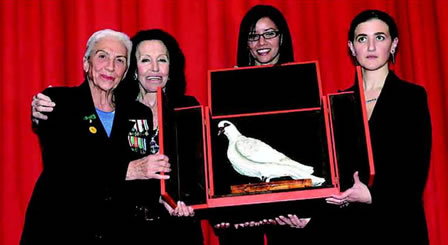

Mariapia
Fanfani,
una vita per gli altri
Dal 1942 sempre in prima linea a fianco dei
poveri e dei diseredati di tutto il mondo
SOLIDARIETÀ
come ragione di vita. Impegno militante sul fronte
del volontariato in un disegno umanitario che
non conosce confini né etnie.
Sono 64 anni che Mariapia Fanfani combatte in
prima linea le sue battaglie a fianco dei poveri
e dei diseredati; delle vittime delle catastrofi
planetarie e delle guerre che insanguinano il
mondo.
COMINCIÒ
tutto nel 1942 con «First Help» e
da allora la sua «macchina da guerra»
contro la miseria e il dolore non si è
più fermata: nelle vesti di Presidente
del Comitato Nazionale Femminile della Croce Rossa
Italiana e Vice Presidente della Lega delle Società
di Croce Rossa e di Mezzaluna (attualmente è
Presidente dell’Associazione "Sempre
Insieme per la Pace") ha promosso, organizzato
e guidato in prima persona spedizioni umanitarie
in tutto il mondo, confrontandosi con molti dei
protagonisti della storia degli ultimi decenni.
Non si è mai arresa di fronte alle difficoltà
economiche.
Perfino con la scelta, dopo l’incontro con
Madre Teresa di Calcutta avvenuto agli inizi degli
anni 70, di vendere tutti i suoi gioielli all’asta.
Di fronte a un personaggio così, i membri
dell’autorevole giuria chiamati ieri sera
a decidere il destinatario della terza edizione
del «Premio Arte e Cultura - La Bagnaia»
nel centenario della nascita di Attilio Monti,
di dubbi ne hanno avuti pochi.
A spiegare il senso di quel riconoscimento, dopo
il caloroso saluto e il “grazie” della
padrona di casa, Marisa Monti Riffeser, è
stata la presidentessa della giuria Beatrice Rangoni
Machiavelli, che ha ricordato come proprio la
lotta alla povertà costituisce la vera
sfida dell’umanità. Perché
la povertà è attentato alla vita,
degrada e spinge alla violenza.

LEI, MARIAPIA
Fanfani, emozionatissima di fronte agli applausi
scroscianti della platea dell’auditorium
di Bagnaia ha ritirato il premio - una bellissima
scultura di Nall - ricordando il suo privilegio
di “viandante che ha percorso le strade
della sofferenza”, accomunando un po’
la sua esperienza a quella dello stesso Attilio
Monti, imprenditore geniale, esponente di quel
capitalismo etico fatto anche di impegno umano
e solidarietà.
AUTOREVOLISSIMI,
anche gli altri candidati arrivati, per così
dire, alla finale della solidarietà di
Bagnaia, che hanno ritirato come riconoscimento
per il loro impegno una pergamena, la riproduzione
delle prime pagine dei giornali del gruppo Monti
Riffeser - La Nazione, il Resto del Carlino e
Il Giorno - oltre a una cospicua somma per finanziare
le rispettive associazioni. I premi sono andati
a Marilis Windisch-Graetz - Dama
Gran Croce di Onore e Devozione del Sovrano Militare
Ordine di Malta, da decenni espressione massima
dei valori e dei princìpi dell'Ordine,
il cui premio è stato ritirato dalla marchesa
Etta Carignani di Novoli; a Scott Neeson,
scozzese di Edimburgo, che iniziò a fare
affari nel settore cinematografico gestendo i
drive-in nelle zone rurali ma che durante una
breve sosta a Bangkok fu sconvolto dal dramma
dei bimbi affamati della città.
Da lì cominciò la sua opera e il
suo impegno sociale fondando un centro di assistenza.
Un’esperienza che lo ha poi letteralmente
"stregato" portandolo ad abbandonare
cinema, industria e ogni proprietà.
La sua missione, in Cambogia, ora è solo
quella di restituire il sorriso ai bimbi diseredati.
Eppoi a Sugata Mitra (il riconoscimento
è stato ritirato dal principe Fabrizio
Caracciolo), scienziato informatico, che ha messo
il suo sapere tecnologico al servizio della lotta
all'analfabetismo in India installando computer
a disposizione di tutti, giovani soprattutto,
che hanno così potuto abbattere le barriere
dell'emarginazione. Il premio speciale “Attilio
Monti” è andato invece al professor
Paolo Morselli, medico chirurgo
protagonista – come egli stesso ha ricordato
- di ben 32 missioni in Africa e in Oriente per
operare pazienti afflitti da gravissime patologie.
A FARE da cornice
alla serata, ospitata nel centro congressi di
Bagnaia e presentata dal direttore de La Nazione
Francesco Carrassi (c’erano anche i direttori
del Qn Giancarlo Mazzuca, del Giorno Giovanni
Morandi e il condirettore di Qn-Qs e direttore
di Quotidiano.net Xavier Iacobelli), una foltissima
platea – gratificata dagli intermezzi pianistici
della bravissima Cristiana Pegoraro - a cui hanno
fatto gli onori di casa la Signora Marisa Monti
Riffeser e il dottor Andrea Riffeser Monti, editore
del nostro gruppo editoriale. Gli ospiti: esponenti
del mondo finanziario e imprenditoriale come Cesare
Romiti e Guccio Gucci, giornalisti e scrittori
come Arrigo Petacco, Roberto Gervaso e Federico
Fazzuoli, rappresentanti della nobiltà,
come i principi Guicciardini Strozzi e il conte
Gaddo della Gherardesca, l’Ambasciatore
Egiziano Rashed Ashraf e molte autorità
istituzionali.
Premio
Speciale Attilio Monti: Morselli, il chirurgo
senza confini
Monti,
il cavaliere che fece l'impresa - di Marco Leonelli
Il
senso della vita - Xavier Jacobelli
|